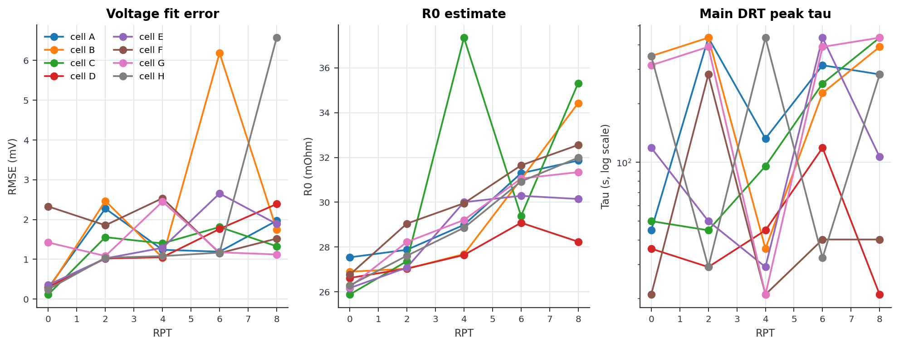
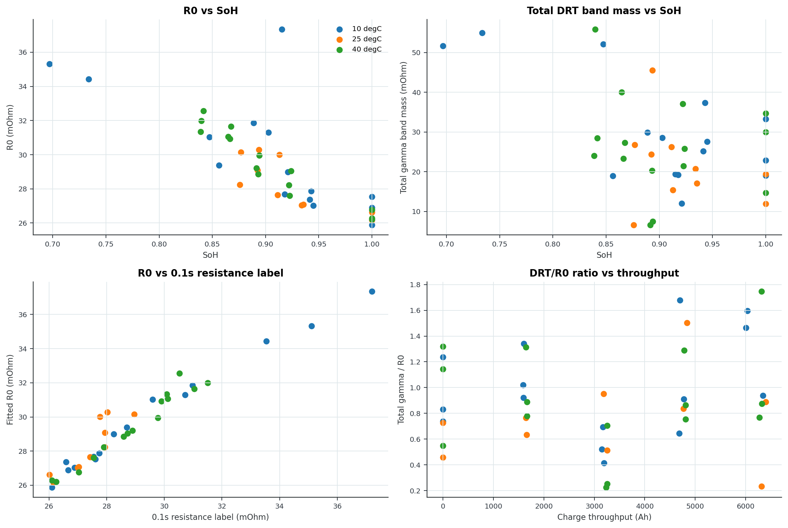
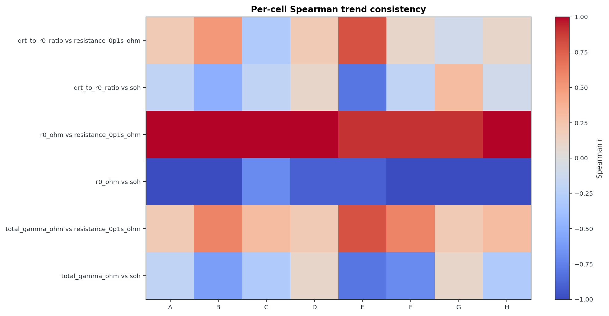
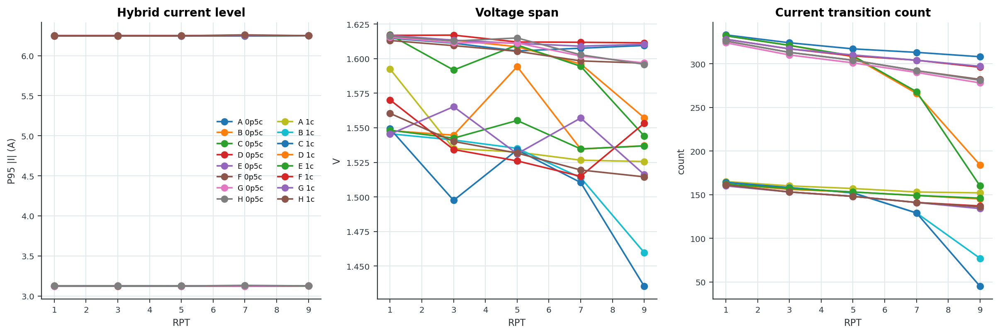
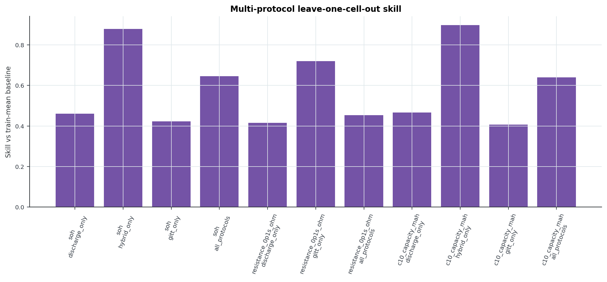

Zenodo Expt4 Time-Series DRT Pipeline
Blunt Verdict
The pipeline runs on processed Zenodo Expt4 GITT, discharge-curve, and hybrid-pulse data.
GITT is the DRT-like feature track. Discharge and hybrid traces are health-feature tracks, not DRT proof.
It still does not provide EIS-derived DRT validation. Do not sell it as validated physics.
Read First
Section Reports
first-slice protocol inventory
Zenodo Expt4 Time-Series DRT Pipeline, first-slice protocol inventory

file and protocol screen
Zenodo Expt4 Time-Series DRT Pipeline, file and protocol screen

HPPC window finder
Zenodo Expt4 Time-Series DRT Pipeline, HPPC window finder

HPPC candidate fit
Zenodo Expt4 Time-Series DRT Pipeline, HPPC candidate fit

EIS DRT baseline
Zenodo Expt4 Time-Series DRT Pipeline, EIS DRT baseline
{kind=link}

time-domain versus EIS bridge comparison
Zenodo Expt4 Time-Series DRT Pipeline, time-domain versus EIS bridge comparison

lambda sensitivity check
Zenodo Expt4 Time-Series DRT Pipeline, lambda sensitivity check

combined EIS and time-domain DRT prototype
Zenodo Expt4 Time-Series DRT Pipeline, combined EIS and time-domain DRT prototype
{kind=link}

time-series 2D DRT surface
Zenodo Expt4 Time-Series DRT Pipeline, time-series 2D DRT surface

EIS 2D DRT surface
Zenodo Expt4 Time-Series DRT Pipeline, EIS 2D DRT surface
{kind=link}

time-series versus EIS 2D comparison
Zenodo Expt4 Time-Series DRT Pipeline, time-series versus EIS 2D comparison

multi-cell 2D batch check
Zenodo Expt4 Time-Series DRT Pipeline, multi-cell 2D batch check
{kind=link}

multi-temperature 2D batch check
Zenodo Expt4 Time-Series DRT Pipeline, multi-temperature 2D batch check
{kind=link}

Run Summary
{
"section_1_data_audit": {
"converted_root": "[local path redacted]
"raw_root": "[local path redacted]
"conversion_manifest_rows": 305,
"converted_status_counts": {
"converted_existing": 305
},
"converted_extension_counts": {
".mpt": 304,
".csv": 1
},
"processed_timeseries_files": 280,
"processed_family_counts": {
"0.1C Voltage Curves": 80,
"GITT Voltage Curves": 80,
"Hybrid CC-Pulse Voltage Curves": 80,
"0.5C Voltage Curves": 40
},
"performance_summary_rows": 80,
"raw_performance_check_file_count": 666
},
"section_2_file_screen": {
"files_screened": 5,
"files_completed": 5,
"files_errored": 0
},
"section_3_gitt_window_finder": {
"input_path": "[local path redacted]
"relative_path": "[local path redacted]
"columns": {
"time_s": "Time (s)",
"current_a": "Current (mA)",
"voltage_v": "Voltage (V)",
"temperature_c": "Temperature (degC)"
},
"rows_loaded_after_cleaning": 176270,
"time_start_s": 0.0,
"time_stop_s": 116442.71814585019,
"duration_s": 116442.71814585019,
"median_dt_s": 1.0000001042790245,
"rest_current_threshold_a": 0.05,
"step_current_threshold_a": 0.12496340499999999,
"current_min_a": -2.5004492,
"current_max_a": 0.0,
"voltage_min_v": 2.4999781,
"voltage_max_v": 4.1849165,
"candidate_count": 25,
"accepted_count": 25
},
"section_4_gitt_candidate_fit": {
"input_path": "[local path redacted]
"relative_path": "[local path redacted]
"column_mapping": {
"time_s": "Time (s)",
"current_a": "Current (mA)",
"voltage_v": "Voltage (V)",
"temperature_c": "Temperature (degC)"
},
"candidate": {
"candidate_id": 13,
"accepted": true,
"start_idx": 85218,
"end_idx": 88101,
"start_time_s": 47400.016944171,
"end_time_s": 47688.196974228194,
"pulse_duration_s": 288.1800300571995,
"pre_rest_s": 3660.084381773202,
"post_rest_s": 3659.8223817484095,
"median_current_a": -2.4984810000000004,
"current_step_a": -2.4992681,
"max_abs_step_a": 2.4992681,
"voltage_span_v": 0.0882582000000002,
"temperature_drift_c": 2.3799680000000016,
"median_dt_s": 1.0000001042790243,
"tau_min_s": 2.000000208558049,
"tau_max_s": 1316.0008039352033,
"excitation_score": 77.24067149793954
},
"include_pre_s": 120.0,
"include_post_s": 900.0,
"lambda_value": 0.001,
"baseline_mode": "charge",
"fit_rows": 4444,
"trend_info": {
"offset_v": 3.642289425091754,
"drift_v_per_as": 5.3574392947077525e-05
},
"r0_ohm": 0.027539871739480894,
"rmse_v": 0.0002815649580452951,
"rmse_mv": 0.2815649580452951,
"tau_min_s": 0.2000000211846782,
"tau_max_s": 435.44804541954124,
"n_tau": 72,
"top_recovered_peaks": [
{
"tau_s": 44.84027669205974,
"gamma_ohm": 0.007962807989804309
},
{
"tau_s": 227.43628686742406,
"gamma_ohm": 0.004507490977217634
},
{
"tau_s": 253.43846018505087,
"gamma_ohm": 0.004421721893289679
},
{
"tau_s": 40.2397727065717,
"gamma_ohm": 0.003975629172133104
},
{
"tau_s": 4.143691908066363,
"gamma_ohm": 0.0011254117430638318
},
{
"tau_s": 0.6579160101623993,
"gamma_ohm": 0.0009518749025284338
}
],
"broad_band_summary": [
{
"band": "fast_band_4_to_16_s",
"tau_start_s": 4.0,
"tau_stop_s": 16.0,
"gamma_sum_ohm": 0.00200597151971256
},
{
"band": "mid_band_25_to_90_s",
"tau_start_s": 25.0,
"tau_stop_s": 90.0,
"gamma_sum_ohm": 0.011938437161937413
},
{
"band": "slow_band_90_to_450_s",
"tau_start_s": 90.0,
"tau_stop_s": 450.0,
"gamma_sum_ohm": 0.008929212870507314
}
]
},
"section_5_gitt_batch": {
"files_requested": 40,
"files_completed": 40,
"files_errored": 0,
"median_rmse_mv": 1.307120059971468,
"median_r0_ohm": 0.02901738837426835
},
"section_6_model_sensitivity": {
"settings_tested": 12,
"rmse_min_mv": 0.24348731932838874,
"rmse_max_mv": 6.052494669656816,
"main_peak_tau_min_s": 44.84027669205974,
"main_peak_tau_max_s": 435.44804541954124
},
"section_7_raw_conversion_check": {
"input_path": "[local path redacted]
"relative_path": "40 Outputs/Experiments/Zenodo Expt4/01_Raw_Converted_CSV/Raw Data/Performance Checks/RPT1/NDK - LG M50 deg - exp 4 - rig 2 - 10degC - cell A - RPT1_01_MB_CC1.mpt.csv",
"columns": {
"time_s": "time/s",
"current_a": "I/mA",
"voltage_v": "Ecell/V",
"temperature_c": "Temperature/\u00b0C"
},
"rows_loaded_after_cleaning": 78183,
"time_start_s": 0.0,
"time_stop_s": 104736.1930842283,
"duration_s": 104736.1930842283,
"median_dt_s": 1.0000000475047273,
"rest_current_threshold_a": 0.05,
"step_current_threshold_a": 0.100038545,
"current_min_a": -0.50021991,
"current_max_a": 1.5074998,
"voltage_min_v": 2.4999781,
"voltage_max_v": 4.2002296,
"candidate_count": 3,
"accepted_count": 3
},
"section_8_health_label_join": {
"rows": 40,
"cells": [
"A",
"B",
"C",
"D",
"E",
"F",
"G",
"H"
],
"rpts": [
0,
2,
4,
6,
8
],
"temperature_groups_c": [
10.0,
25.0,
40.0
],
"correlations_computed": 63,
"strongest_abs_spearman": [
{
"feature": "r0_ohm",
"label": "resistance_0p1s_ohm",
"n": 40,
"pearson_r": 0.972369609316321,
"spearman_r": 0.9705440900562854
},
{
"feature": "r0_ohm",
"label": "soh",
"n": 40,
"pearson_r": -0.7877936360070606,
"spearman_r": -0.8773849012591797
},
{
"feature": "r0_ohm",
"label": "charge_throughput_ah",
"n": 40,
"pearson_r": 0.7415176595716029,
"spearman_r": 0.8602440626987277
},
{
"feature": "r0_ohm",
"label": "energy_throughput_wh",
"n": 40,
"pearson_r": 0.741785557947841,
"spearman_r": 0.859490619245521
},
{
"feature": "r0_ohm",
"label": "days_degradation",
"n": 40,
"pearson_r": 0.7466538568904338,
"spearman_r": 0.8526309607265051
},
{
"feature": "r0_ohm",
"label": "c2_capacity_mah",
"n": 40,
"pearson_r": -0.7625064692926606,
"spearman_r": -0.8467166979362103
},
{
"feature": "r0_ohm",
"label": "c10_capacity_mah",
"n": 40,
"pearson_r": -0.7761201171423007,
"spearman_r": -0.8463414634146341
},
{
"feature": "rmse_mv",
"label": "days_degradation",
"n": 40,
"pearson_r": 0.42968003789852177,
"spearman_r": 0.5224704689481778
}
]
},
"section_9_held_out_cell_validation": {
"input_rows": 40,
"prediction_rows": 1260,
"metric_rows": 36,
"incremental_value_rows": 18,
"drt_increment_positive_rows": 2,
"best_skill_rows": [
{
"n": 30,
"mae": 0.0003941186895813733,
"rmse": 0.0005243616532040845,
"baseline_mae": 0.0020566307296713124,
"skill_vs_baseline_mae": 0.8083668186537499,
"validation_scope": "within_temperature",
"target": "resistance_0p1s_ohm",
"feature_set": "r0_only"
},
{
"n": 40,
"mae": 0.0004248195400360027,
"rmse": 0.00059751521680821,
"baseline_mae": 0.001851219321297414,
"skill_vs_baseline_mae": 0.7705190653810425,
"validation_scope": "global",
"target": "resistance_0p1s_ohm",
"feature_set": "drt_plus_r0_voltage"
},
{
"n": 40,
"mae": 0.00046443503587959933,
"rmse": 0.0006753409680029884,
"baseline_mae": 0.001851219321297414,
"skill_vs_baseline_mae": 0.7491193882126818,
"validation_scope": "global",
"target": "resistance_0p1s_ohm",
"feature_set": "r0_only"
},
{
"n": 40,
"mae": 0.0004699134558686157,
"rmse": 0.0007278553496397069,
"baseline_mae": 0.001851219321297414,
"skill_vs_baseline_mae": 0.7461600306011931,
"validation_scope": "global",
"target": "resistance_0p1s_ohm",
"feature_set": "r0_plus_voltage"
},
{
"n": 30,
"mae": 0.0005231097591477729,
"rmse": 0.0007921142194088795,
"baseline_mae": 0.0020566307296713124,
"skill_vs_baseline_mae": 0.7456472124038643,
"validation_scope": "within_temperature",
"target": "resistance_0p1s_ohm",
"feature_set": "drt_plus_r0"
},
{
"n": 40,
"mae": 0.0005212062949559277,
"rmse": 0.0007437069748530873,
"baseline_mae": 0.001851219321297414,
"skill_vs_baseline_mae": 0.7184524335070985,
"validation_scope": "global",
"target": "resistance_0p1s_ohm",
"feature_set": "drt_plus_r0"
},
{
"n": 30,
"mae": 0.0010761549407767306,
"rmse": 0.0019197751078375632,
"baseline_mae": 0.0020566307296713124,
"skill_vs_baseline_mae": 0.47673885970345287,
"validation_scope": "within_temperature",
"target": "resistance_0p1s_ohm",
"feature_set": "drt_plus_r0_voltage"
},
{
"n": 30,
"mae": 147.43836372675528,
"rmse": 183.20429890355965,
"baseline_mae": 277.3071962062775,
"skill_vs_baseline_mae": 0.4683211768616279,
"validation_scope": "within_temperature",
"target": "c10_capacity_mah",
"feature_set": "drt_plus_r0"
}
]
},
"section_10_trend_consistency": {
"input_rows": 40,
"correlation_rows": 160,
"expected_direction_checks": 32,
"expected_direction_pass": 28,
"expected_direction_pass_ratio": 0.875
},
"section_11_discharge_curve_features": {
"files_requested": 120,
"files_completed": 120,
"files_errored": 0,
"family_counts": {
"0.1C Voltage Curves": 80,
"0.5C Voltage Curves": 40
}
},
"section_12_hybrid_pulse_features": {
"files_requested": 80,
"files_completed": 80,
"files_errored": 0,
"rate_counts": {
"0p5c": 40,
"1c": 40
}
},
"section_13_multi_protocol_validation": {
"feature_table_rows": 80,
"prediction_rows": 600,
"metric_rows": 11,
"feature_counts": {
"discharge_only": 10,
"hybrid_only": 10,
"gitt_only": 6,
"all_protocols": 26
},
"leakage_audit_rows": 156,
"excluded_target_proxy_features": 16,
"best_skill_rows": [
{
"n": 40,
"mae": 25.557902173964827,
"rmse": 35.59900870531325,
"baseline_mae": 248.66738596206355,
"skill_vs_baseline_mae": 0.8972205298451807,
"target": "c10_capacity_mah",
"feature_set": "hybrid_only"
},
{
"n": 40,
"mae": 0.006115478363409236,
"rmse": 0.008797741865084831,
"baseline_mae": 0.05018015767251797,
"skill_vs_baseline_mae": 0.878129550661845,
"target": "soh",
"feature_set": "hybrid_only"
},
{
"n": 40,
"mae": 0.0005195353105595518,
"rmse": 0.0007387346964850724,
"baseline_mae": 0.0018512193212974156,
"skill_vs_baseline_mae": 0.7193550733926877,
"target": "resistance_0p1s_ohm",
"feature_set": "gitt_only"
},
{
"n": 80,
"mae": 0.017547621735121813,
"rmse": 0.042774619671119764,
"baseline_mae": 0.049466686789073344,
"skill_vs_baseline_mae": 0.645263855856263,
"target": "soh",
"feature_set": "all_protocols"
},
{
"n": 80,
"mae": 88.00491015398875,
"rmse": 194.4335689319517,
"baseline_mae": 244.71141392915052,
"skill_vs_baseline_mae": 0.6403726792266904,
"target": "c10_capacity_mah",
"feature_set": "all_protocols"
},
{
"n": 80,
"mae": 130.43841789535657,
"rmse": 272.4271773754325,
"baseline_mae": 244.71141392915052,
"skill_vs_baseline_mae": 0.466970437541089,
"target": "c10_capacity_mah",
"feature_set": "discharge_only"
},
{
"n": 80,
"mae": 0.026668795968955033,
"rmse": 0.0584750187767346,
"baseline_mae": 0.049466686789073344,
"skill_vs_baseline_mae": 0.46087361616371925,
"target": "soh",
"feature_set": "discharge_only"
},
{
"n": 40,
"mae": 0.001012132792978033,
"rmse": 0.0021971727739351988,
"baseline_mae": 0.0018512193212974156,
"skill_vs_baseline_mae": 0.45326154425144716,
"target": "resistance_0p1s_ohm",
"feature_set": "all_protocols"
},
{
"n": 40,
"mae": 0.02840071168477169,
"rmse": 0.04239079471043588,
"baseline_mae": 0.04925979949220335,
"skill_vs_baseline_mae": 0.42345052197650856,
"target": "soh",
"feature_set": "gitt_only"
},
{
"n": 40,
"mae": 0.001081053795835112,
"rmse": 0.0018608897746645906,
"baseline_mae": 0.0018512193212974156,
"skill_vs_baseline_mae": 0.41603148616801267,
"target": "resistance_0p1s_ohm",
"feature_set": "discharge_only"
}
]
}
}HTML files exported: 33